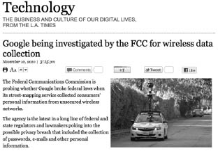

“Dünyayı ele geçirmeye çalışan uzaylılar” Holywood sinemasının klişe söylemlerinden biridir hep. Yıllardır suçsuz, günahsız uzaylıların üzerine atılan bu çirkin iftira insanların asıl niyetini gizliyor gibi gelmiştir bana. Aslında ortada kolektif bir yanlış yönlendirme var ve gücü kontrol etmek isteyen aslında yine insan.
Matrix’teki Ajan Smith’in Neo’ya söyledikleri bu durumu tamamen açıklıyor: “Türlerinizi sınıflandırmaya kalktığımda sizin, insanların, memeli olmadığınızı fark ettim. Memeliler bir ortama uyum sağlarken siz yayılıyor, ele geçiriyor ve onu yok ediyorsunuz. Aynı şeyi bu gezegende yapan bir canlı daha var. Ne biliyor musun? Virüs. Siz bu gezegenin kanserisiniz ve biz... İlacız.”
Ele geçirmek için ilk aşama yayılmak, yayılmak için gerekli olan ise cazibe. İnsanlar sizi sevmeli ve size ihtiyaç duymalı. Ulaşılabilir ve aynı zamanda özendirici olmalısınız.
Google gibi...
Ele geçirmekten çok uzak gibi gözüken amacıyla beraber, Google ortaya çıktığında arama sonuçlarını geçmişteki rakiplerinden daha doğru şekilde sunan algoritmasıyla dikkatimi çekmişti. Zaman içerisinde bu yapı genişleyerek dünya üzerindeki en büyük veri ağını oluşturdu. Binlerce sunucusu, petabyte seviyesinde veri aktarımıyla Google ve yan servisleri internetin bir adım ilerisine geçerek sosyal hayatın da bir parçası haline geldi.
Ama aslında Google’ın, Ajan Smith’in bahsettiği yayılma aşamasını tamamladığını, bazı servisleriyle ele geçirme aşamasına geldiğini görüyorum.
Belki de en temelden başlamak lazım. Hepimiz sadece karşıdaki kişinin okuyacağını düşünerek e-posta göndeririz, Gmail’de posta kutumuza gelen bütün e-posta içerikleri güzelce taranıyor. Taranan içerikten elde edilen anahtar kelimelere göre bize gösterilen reklamları tatlı bir tesadüf olarak algılamamak gerek. E-postaların içeriğini taramak başlı başına bir mahremiyet ihlaliyken, bunu reklam gerekçesine dayandırmak bizim denetleyemeyeceğimiz bir bahane. Böyle bir sistem bir kere kurulduktan sonra e-postaların çok çeşitli sebeplerle taranarak veri biriktirilebileceği şüphe götürmez bir gerçek.
Bazı durumlarda e-postanızı cep telefonunuzdan da gönderebilirsiniz elbette. Her şeyin cep boyutuna ulaştığı çağda, Google’ın bundan faydalanacak bir hamlesi olmadığını düşünmediniz herhalde?
Gücünü bağımsız yazılım geliştiricilerden alan Android, açık kaynak kodlu yapısıyla yazılım geliştiricilerin ilgisini çekmiş durumda. Apple’ın karşısında başka şekilde duramayacağını anlayan Google, Android’i kuluçka platformlarından biri yapmakta gecikmedi. Ama ne yazık ki işler her zaman yolunda gitmiyor. Android’in başı güvenlik açıklarıyla dertte. Platformda haddinden fazla bulunan güvenlik açıkları hızla kapatılsa da halen Android’in sırtındaki kambur olduğu söylenebilir. Android’in kuluçka bir proje olmasının diğer sebebiyse gelecekte mobil internet ve ödeme uygulamalarının daha da popülerleşeceği gerçeği. Google’ın bir eli elbette ki cebimizde olacak.
Google’ın eli nasıl cebimizdeyse, gözü de sürekli üzerimizde. Gerçi çok da meraklı değiliz sokakta gezmeye. Yerimizden kalkmadan dünyayı gezmeyi çok sevdik. Bu şekilde “yayıldı” Google Map/Earth servisi. Bizi ele geçirmesi ise her lokasyonu işaretleyip, hangi renk tişört giydiğimizi bile uzaydan gösterebilecek hale getirilmesiyle oldu. Google’ın sokakları görüntülediği araçların, etraftaki rasgele ağlara ait verileri topladığı anlaşıldığında ise ufak bir ayaklanma yaşanmadı değil. Ama Google’ın her duruma verecek bir cevabı, her duruma uygun bir hamlesi var. Araçlardan kablosuz ağ ekipmanlarının söküldüğünü söyleyerek durumu toparlama çabası bunlardan sadece biri. İnandırıcı oldu mu peki? İşte bu tam bir muamma.
Herkes emo gençlik gibi kendi resimlerini rötuşlayıp, kesip biçecek uzmanlıkta olmadığından basit araçlara ihtiyaç duyabiliyor. Picasa hem internette resimleri saklamak, hem de biçimlendirmek için kullanılan pratik bir araç. Ama fotoğraflar sadece hoş anıları saklamıyor. Geotag özelliği olan mobil telefonlarla çekilen fotoğrafların içinde çekildiği yerin koordinatları da yer alıyor.

Los Angeles Times, Google kablosuz ağlardan veri topluyor haberi (2010).
Google, Picasa üzerinde sahip olduğu fotoğrafların yalnızca lokasyon verilerini bile bize daha farklı reklamlar gösterip, hakkımızda daha fazla şey toplamak için kullanabiliyor. Yeni Google+ servisi sayesinde bu fotoğraflardaki yüzleri otomatik algılayarak kolayca etiketleyebiliyor.
Başkalarına bir şeyler göstermek istediğimizde ise Youtube kullanıyoruz. 1990’larda Televole izlemek neyse artık internette komik video izlemek de o. Youtube’a bilimsel bir araştırma videosunu da kedinizin miyavlamasını da ekleseniz fark etmez. Her halükarda Google çatısı altında internetteki en çok ziyaret edilen sitelerden biri kendisi. Youtube internette video içeriği akışının hızlandığı zamanlarda, ileriye yönelik atılacak önemli adımlardan biriydi. Google bu projeyi cömertçe satın aldı.
Siz, yediğiniz, içtiğiniz, izlediğiniz şeylersiniz! Google TV, Google’ın kuluçka projelerinden bir diğeri. Bu IPTV sisteminde, izlediğiniz programlarla ilgili istatistiklerin toplandığı aşikâr olmakla birlikte gelecekte izlediğiniz programlarda, beğendiğiniz sanatçıların giysilerini de Google TV üzerinden satın alabilmeniz planlanıyor. Burada da büyük esnaf Google’ın sipariş ettiğiniz “Hürrem yüzüğünden” komisyonunu alacağını unutmayın! Hürrem yüzüğü sevdiğinizi nereden mi biliyor? Daha geçen gün Gmail’den gönderdiğiniz e-postada dizinin son bölümünü tartışıyor, internette Google Chrome ile gezerken dizinin eski bölümlerine göz atıp, her hafta aynı saatte o diziyi Google TV’den izliyorsunuz.
Sizce Google bunu ıskalar mı?
Hürrem yüzüğünü televizyon yerine internetten aldığınızı düşünelim. O zaman da Google mafyasının hakimiyet alanındasınız. İnternette reklam pazarının yarısından fazlasında pay sahibi olan Adwords sistemi Google’ın tüm yan servislerinden akan milyarlarca bilginin işlenerek değerlendirildiği bir kazanç kapısı. En çok uğraştıkları şeylerden biri, hakkımızda topladıkları verileri en kazançlı şekilde kullanmak. Yarın başka şekillerde de para kazanabilirler fakat bugün Adwords kişisel bilgilerimiz üzerinden en iyi para kazandıkları servis.
Google hep kişisel bilgilerimiz arasında cirit atacak değil ya. Biz de Facebook, Twitter’dan röntgenci gibi birbirimizi gözetleyip neler yaptığımızı izliyoruz. Üzücü olan, bu alanın büyük patronun belki de en çok ıskaladığı yer olması. Buzz, Orkut, Jaiku, Wave, Opensocial projeleriyle kapıdan, bacadan her yerden girdiler sosyal ağ pazarında yer alabilmek için. Fakat fazlaca teknik bakış açılarından mı, yoksa kullanıcı ihtiyaçlarına yeterince kulak veremediklerinden midir, bu alanda bir türlü tutunamadılar. Yapılan her proje yarım yamalak kaldı ve sonunda kapatıldı. Hal böyleyken kişisel bilgileri elde etme konusunda üstün olan Twitter, Facebook gibi devlerin potansiyeli doğal olarak Google’ın ağzını sulandırıyor. Google+ ile şanslarını zorlasalar da yaygın bir servisi satın almaları tek şansları gibi gözüküyor.
Eğer bu servislerin hiçbirini kullanmıyor, sadece kendi internet siteniz üzerinden bir şeyler yayınlıyorsanız, yine Google’dan kurtuluş yok. İnternet sitenize bir kod ekleyerek hem Google Analytics’ten detaylı ziyaretçi istatistiklerini takip edebilirsiniz, hem de Google dünyasına kapılarınızı açabilirsiniz. Kod eklenen her siteye dair bilgiler Google tarafından işlenip diğer Google servisleri tarafından kullanılmak üzere profilinizde saklanıyor. Üstelik bu servise üye olmazsanız Google arama sonuçlarında daha arka sıralarda çıkmanız olası.
Bunca servisin arasında hâlâ ele geçirilmediyseniz, kullandığınız Windows işletim sisteminin yaratıcısı Microsoft’un ıskaladığı internet computing devrimini unutmayın. Google bu devrime fena halde hazırlanıyor. İyi bir pazar payına doğru ilerleyen Google Chrome yetmiyormuş gibi, Chrome OS/Android ile taşınabilir cihazlara yerleşme derdinde. Tüm verilerin internet üzerinde saklandığı, dolayısıyla artık hiçbir verinin gönderilmeyip, sadece gerekli kişilerle paylaştırıldığı bir gelecekte Google kadar eli güçlü bir oyuncu olmadığı ortada.
Portre buyken benim kafama takılan şey Google’ın Ajan Smith’in bahsettiği “ele geçirme” safhasından “yok etme” safhasına ne zaman geçeceği. Belki bugün birer kibirli kanser hücresi olarak kendimize bunu konduramıyoruz ama yakın zamanda Google bazılarımızın “kanserli hücre” olduğuna karar verirse hakkımızdaki onca bilginin kaçını reddedebiliriz bunu bir düşünün.